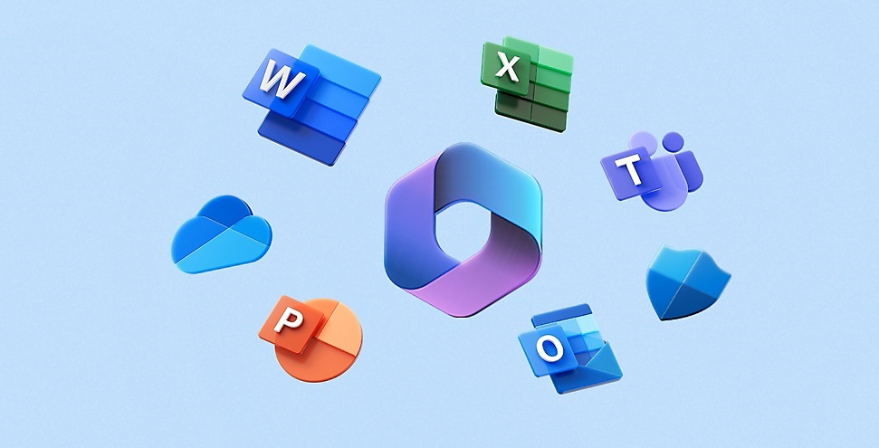
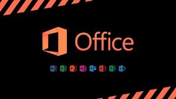
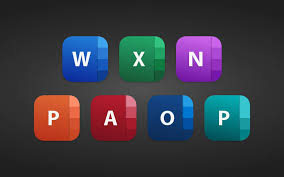
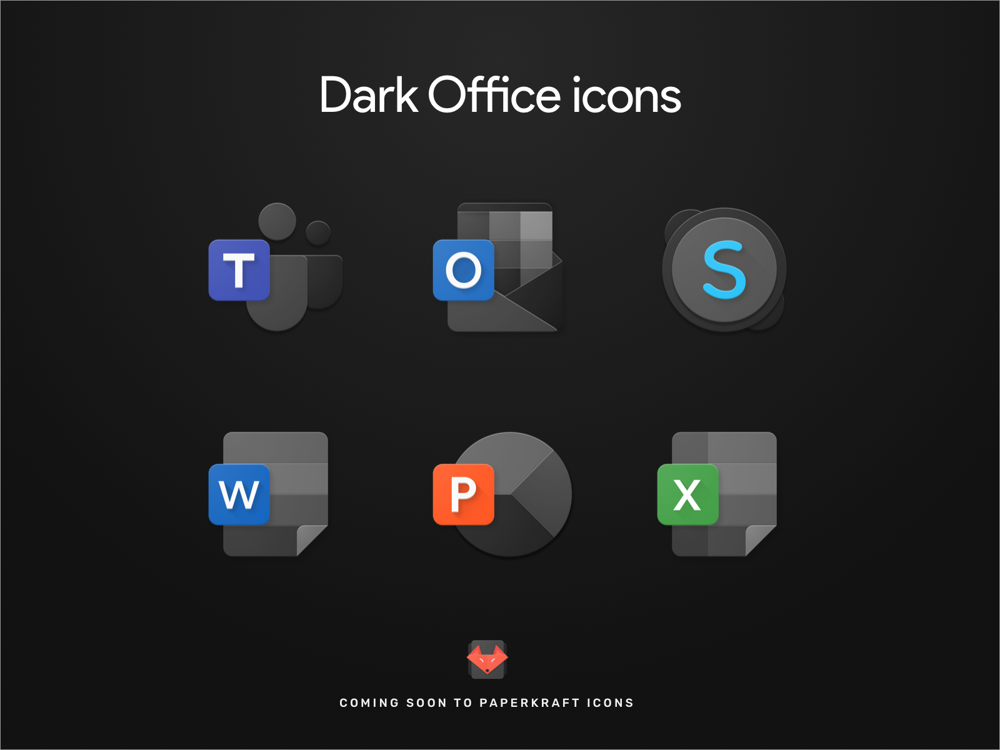
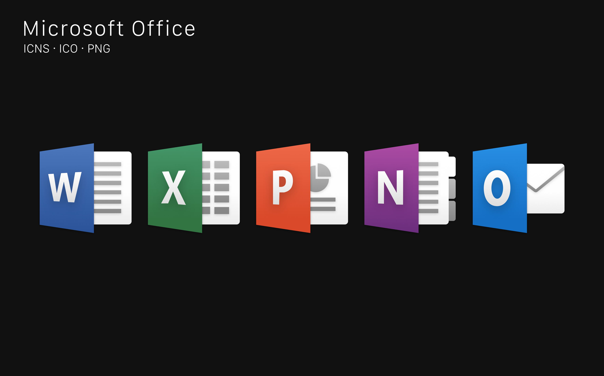
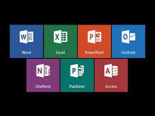

It was first announced by Bill Gates on August 1, 1988, at COMDEX in Las Vegas. Initially a
marketing
term for an
office suite (bundled set of productivity applications), the first version of Office contained,
- Microsoft Word
- Microsoft Excel
- Microsoft PowerPoint
- Microsoft Access.
It has been updated and added new applications with new features and services over the years. It has
been and is being produced in different versions to function well for the purpose and the environment it
will be used in. Different environments include desktops as well as mobile devices. As technology advanced,
Microsoft Office adapted and expanded. It embraced innovations such as mobile devices and cloud computing,
making it accessible across different platforms. Today, Microsoft Office encompasses a diverse array of
applications. In addition to the original applications, they have included Outlook (for email and
scheduling), OneNote (for note-taking), and a lot more. Microsoft has continued to introduce new versions of
Office and enhance the software. However, Microsoft Office 365 now acts as the primary source to acquire
other versions of Office via subscription, purchasing, or downloading. The Microsoft Office package today is
versed with excellent applications and features. It is the top software of choice for many people and has
billions of users across the world.




